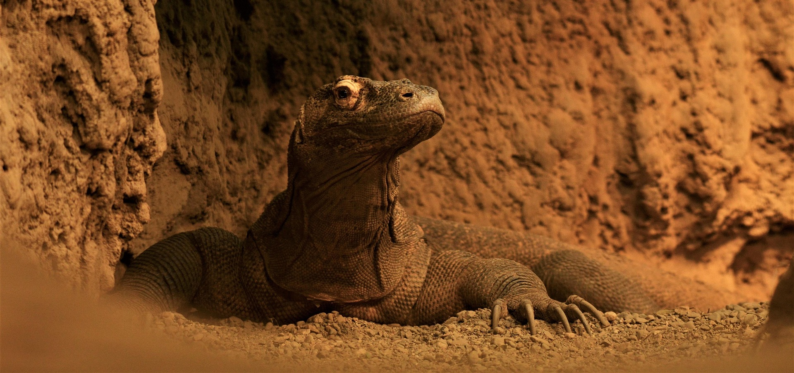

<html>
<head>
    <title>Menú Desplegable</title>
<body 
background="cas.jpg">
    <style>
          
    body { font-family: Arial, sans-serif; }
    
    .menu { margin: 0; padding: 0; list-style: none; }
    .menu li { float: left; position: relative; width: 150px; background-color: #333; }
    .menu li a { display: block; padding: 15px; color: white; text-decoration: none; text-align: center; }
    .menu li a:hover { background-color: #555; }

    .submenu { display: none; position: absolute; top: 100%; left: 0; margin: 0; padding: 0; list-style: none; }
    .submenu li { background-color: #444; width: 100%; }
    
    .menu li:hover > .submenu { display: block; }
 
    </style>
</head>
</html>
<body>

    <ul class="menu">
        <li><a href="#">Peces</a>
            <ul class="submenu">
                <li><a href="https://www.fishipedia.es/pez/betta-splendens">Pez Betta</a></li>
                <li><a href="https://www.fishipedia.es/pez/holacanthus-ciliaris">ángel reina</a></li>
                <li><a href="https://www.fishipedia.es/pez/hyphessobrycon-eques">Tetra serpae</a></li>
                <li><a href="https://www.tomscatch.com/es/especies-de-peces/marlin-blanco-11">Marlin Blanco</a></li>
                <li><a href="https://www.fishipedia.es/pez/hyphessobrycon-erythrostigma">Megalamphodus</a></li>
            </ul>
         </li>
        <li>
            <a href="#">Mamiferos</a>
            <ul class="submenu">
                <li><a href="gorila.html">Gorila</a></li>
                <li><a href="lemur.html">Lemur</a></li>
                <li><a href="caballo.html">Caballo</a></li>
                <li><a href="armadillo.html">Armadillo</a></li>
                <li><a href="reno.html">Reno</a></li>
            </ul>
        </li>
        <li><a href="#">Anfibios</a>
            <ul class="submenu">
                <li><a href="anfi2.html">Anfibios</a></li>
            </ul>
        </li>
        <li><a href="#">Aves</a>
            <ul class="submenu">
                <li><a href="https://www.nationalgeographicla.com/animales/loros">Loro</a></li>
                <li><a href="https://www.faunia.es/planea-tu-visita/animales/tucan-toco">Tucan Toco</a></li>
                <li><a href="https://deanimalia.com/selvaaguilafilipina.html">Águila Monera</a></li>
                <li><a href="https://aveschile.cl/picaflor-2/">Colibrí de Arica</a></li>
                <li><a href="https://laberintoenextincion.blogspot.com/2009/10/maca-tobiano.html">Macá Tobiano</a></li>
            </ul>
         </li>
         <li><a href="#">Reptiles</a>
        <ul class="submenu">
                <li><a href="coco.html">Cocodrilo De Agua Salada</a></li>
                <li><a href="torta.html">Tortuga gigante de galapagos</a></li>
                <li><a href="komodo.html">Dragon De Komodo</a></li>
                <li><a href="cama.html">Camaleon</a></li>
                <li><a href="ser.html">Serpiente De Cascabel</a></li>
            </ul>
         </li>
         <li><a href="index.html">Menu Principal</a>
         </li>
    </ul>

</body>
</html>

<html>
<head><title>Dragón de Komodo</title></head>
<body
 background="saba.jpg" text="white">
<center><font face="times new romans"><h2><marquee bgcolor="green" height="50" width="75%">Dragón de Komodo</marquee></h2></font></center> 
<center><h3><font face="calibri" color="red">(Varanus komodoensis)</font></h3></center>
<center></center>
<center><h4>El dragón de Komodo (Varanus komodoensis) vive exclusivamente en estado salvaje en unas pocas islas de Indonesia, dentro del Parque Nacional de Komodo y zonas aledañas. Sus principales hábitats son las islas de Komodo, Rinca, Flores, Gili Motang y Gili Dasami, caracterizadas por bosques secos, sabanas y zonas rocosas de tierras bajas.</h4></center><p>
<center><h3>Caracteristicas</h3></center>
<ol type="1">
 <li>Mordida venenosa: Poseen glándulas venenosas en la mandíbula que segregan proteínas tóxicas, las cuales reducen la presión sanguínea, causan hemorragias y evitan la coagulación de la sangre de sus presas, provocando un shock.</li>
 <li>Sentidos agudos: Utilizan su larga lengua bífida para oler y detectar carroña o presas a una distancia de hasta 4 a 9.5 km, utilizando el órgano de Jacobson para procesar los estímulos químicos del aire.</li>
 <li>Gran tamaño y fuerza: Son los lagartos más pesados y grandes del planeta, con escamas rugosas y reforzadas, una cola musculosa tan larga como su cuerpo y garras afiladas que utilizan para cazar.</li>
 <li>Dieta carnívora y carroñera: Son superdepredadores que se alimentan de cerdos, ciervos, búfalos de agua y, a veces, de otros dragones de Komodo más pequeños, capaces de ingerir hasta el 80% de su peso corporal en una comida.</li>
 <li>Reproducción inusual: Las hembras pueden reproducirse mediante partenogénesis, un proceso asexual donde no necesitan un macho para fertilizar los huevos, permitiendo que una hembra solitaria cree descendencia.</li>
</ol>
</body>
</html>